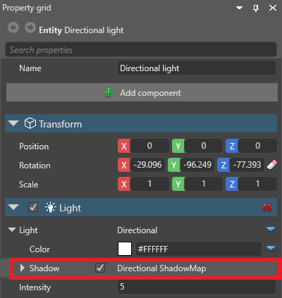
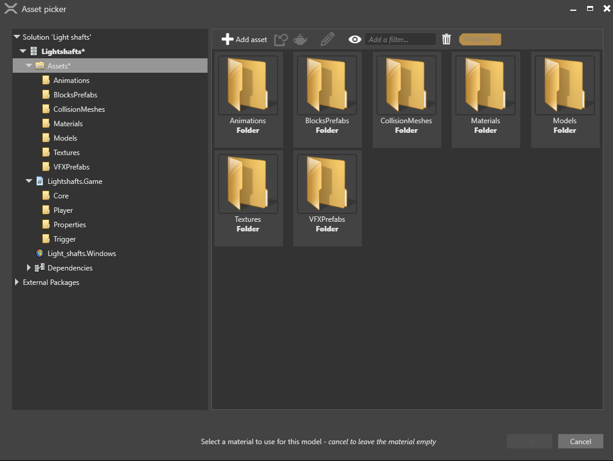

ライト シャフト
初級 デザイナー アーティスト
ライトシャフト（light shafts; 光の軸） は目に見える光の線のことであり、ゴッドレイ（god rays; 神の光） とも呼ばれます。
Stride のライトシャフトはシャドウマップに基づいており、ポストエフェクトではなくレイマーチングを使用しているため、ライトが見えていなくても表示できます。影を落とすライト（ポイント ライト、ディレクショナル ライト、スポット ライトなど）であれば、ライトシャフトを落とすことができます。
ライトシャフトを作成するには、3つのコンポーネントを併用します。ライト、ライトシャフト、ライトシャフトバウンディングボリュームです。
1. グラフィックスコンポジターでライトシャフトを有効化する
既定では、Stride の新規プロジェクトではライトシャフトは無効です。有効にする手順は次の通りです。
アセットビューで、グラフィックスコンポジターアセットをダブルクリックします。

すると、グラフィックスコンポジターエディターが開きます。
フォワードレンダラーノードを選択します。

プロパティグリッドで、Light shafts の横にある
 （置換）をクリックし、LightShafts を選択します。
（置換）をクリックし、LightShafts を選択します。LightShafts チェックボックスがオンであることを確認します。
グラフィックスコンポジターにの詳細については、グラフィックス コンポジターを参照してください。
2. ライトシャフトコンポーネントを追加する
シーンから、ライトシャフトを作成したいライトを持つエンティティを選択します。ライトは、影を落とせるものでなければなりません（ポイント ライト、ディレクショナル ライト、スポット ライトなど）。
プロパティグリッドで、Light > Shadow プロパティのチェックがオンになっていることを確認します。

[Add component] をクリックし、Light shaft を選択します。
Game Studioは、エンティティにライトシャフトを追加します。
3. バウンディングボリュームを追加する
ライトシャフトバウンディングボリュームは、ライトシャフトが作られる領域を定義します。バウンディングボリュームは、ディレクショナルライトを持っているエンティティに追加することもできますが、通常は他のエンティティに追加した方が簡単です。
アセットビューで、[Add asset] をクリックします。
Models 配下で、ボリュームにしたい形状を持つモデルを選択します。例えば、キューブを選択すると、ライトシャフトはキューブの領域の内部に作成されます。
マテリアルアセットを選択するために、Select an asset ウィンドウが開きます。

モデルにマテリアルは必要ありませんので、ここでは [Cancel] をクリックし、マテリアルのないモデルを作成します。
シーンに空のエンティティを追加します。後で位置を変えることができるので、最初はどこに置いても構いません。
エンティティを選択した状態で、プロパティグリッドで [Add component] をクリックし、Light Shaft Bounding Volume を選択します。

ライトシャフトバウンディングボリュームコンポーネントの light shaft プロパティの横にある
 （アセットの選択）をクリックします。
（アセットの選択）をクリックします。エンティティピッカーで、ライトシャフトを作成するディレクショナルライトを選択し、[OK] をクリックします。
ライトシャフトバウンディングボリュームコンポーネントの Model プロパティの横にある
（アセットの選択）をクリックします。Select an asset ウィンドウで、先ほど作成したモデルを選択し、[OK] をクリックします。

このモデルが、ライトシャフトバウンディングボリュームの形状を定義します。
トランスフォームコンポーネントを使って、ライトシャフトを作りたい領域をカバーするエンティティの位置とスケールを設定します。
Tip
シーンエディターでライトシャフトバウンディングボリュームのナビゲーションの表示／非表示を切り替えるには、シーンエディターツールバー の ギズモオプションメニューを開き、ライトシャフトバウンディングボリューム チェックボックスを変更します。

ライトシャフトのプロパティ
| プロパティ | 説明 |
|---|---|
| Density | 密度。値が大きいほど明るい光軸になります。 |
| Sample count | サンプル数。値が大きいほどきれいになりますが、GPU の負荷が大きくなります。 |
| Process bounding volumes separately | オンにすると、複数のバウンディングボリュームを個別に処理します。これによりライトシャフトが重なった際の品質が保たれますが、GPU の負荷が大きくなります。 |
グラフィックスコンポジターにおけるライトシャフトプロパティ
これらのプロパティにアクセスするには、グラフィックスコンポジターエディター で フォワードレンダラーノードを選択し、Light Shafts を展開します。
これらのプロパティは、シーン内のすべてのライトシャフトにグローバルに適用されます。

| プロパティ | 説明 |
|---|---|
| Bounding volume buffer downsample level | 値が小さいほど正確なボリュームバッファ領域を生成しますが、GPU の負荷がより大きくなります。 |
| Light buffer downsample level | 値が小さいほど光軸がシャープになりますが、GPU の負荷がより大きくなります。 |
ライトシャフトの最適化
ライトシャフトは、暗い環境で最も効果を発揮します。ライトとライトシャフトのコンポーネントプロパティを調整することで、さまざまな結果を得ることができます。たとえば、ライトの色（ライトコンポーネントプロパティ）やライトシャフトの密度（ライトシャフトコンポーネントプロパティ）を変更することができます。
複数のライトシャフトが重なると、次のスクリーンショットのように、視覚的にうるさくなってしまいます。

この問題を軽減するには、ライトシャフトコンポーネントプロパティで、密度（density） を減らし、サンプル数（Sample count） を増やします。
また、別のバウンディングボリュームを追加した際に、個別に処理するという方法もあります。
追加のバウンディングボリュームを作成し、ライトシャフトを作成したい領域を覆うように配置します。バウンディングボリュームが重なるとライトシャフトが眩しくなるので、注意してください。
ライトシャフトコンポーネントのプロパティで、Process bounding volumes separately（バウンディングボリュームを個別に処理する） が選択されていることを確認します。
Note
バウンディングボリュームを個別に処理するには、より多くの GPU パワーが必要です。